Capitol Reef National Park Travel Guide
Named for its whitish Navajo Sandstone cliffs with dome formations, the park is filled with brilliantly colored sandstone cliffs, gleaming white domes, and contrasting layers of stone and earth
The visitor center is open daily, except for some major holidays. Hours vary seasonally
Accepts America The Beautiful Pass
on the trail from the visitor center to the Fruita Campground
on the Fremont River Trail from the campground to the south end of Hattie's Field
How to Get There
From Moab (137mi): Take E 100 N to US-191 N/N Main St. Follow US-191 N and I-70 W to UT-24 W.
Overview
Capitol Reef National Park in south-central Utah protects the Waterpocket Fold, a nearly 100-mile-long wrinkle in the Earth's crust, along with colorful cliffs, canyons, domes, and arches. The park is named for the white sandstone domes that resemble the U.S. Capitol and for the cliffs, which blocked travel like a reef barrier at sea. The Fremont River runs through the park and waters the historic orchards of Fruita, a Mormon pioneer settlement where visitors can pick fruit in season. Capitol Reef is one of Utah's least-crowded national parks, which is part of its appeal.
The area was protected as Capitol Reef National Monument in 1937 and became a national park in 1971. Today the park covers about 242,000 acres. People come for the scenic drive through red rock cliffs, the many hikes to arches and canyons, the historic Fruita orchards and the pies at the Gifford Homestead, the petroglyphs left by the Fremont people, and the remote backcountry. The park is also an International Dark Sky Park, so night skies are a highlight.
Park Sections
Utah Highway 24 crosses the park from east to west, and the main developed area is Fruita, near the visitor center, where the Scenic Drive begins. The Scenic Drive goes south for about 8 miles along the Waterpocket Fold to Capitol Gorge. In the north, Cathedral Valley is a remote district of towering monoliths reached by unpaved roads off Highway 24, including a river ford. The Waterpocket District in the south is reached by the Notom-Bullfrog Road and the Burr Trail, which lead to canyons such as Muley Twist Canyon. These areas need more time, planning, and often a high-clearance vehicle.
Sightseeing and Exploring the Park
Highway 24 itself is a scenic drive, with pull-offs at Chimney Rock, the Panorama Point and Goosenecks Overlook viewpoints, the Fremont petroglyph panels, and the Pioneer Register. The 7.9-mile paved Scenic Drive continues south with views of the cliffs and ends at Capitol Gorge, with an unpaved side road into Grand Wash. A fee is collected at a small station on the Scenic Drive. For more of an adventure, the unpaved Notom-Bullfrog Road and Cathedral Valley loop offer solitude and sweeping views of the fold, and are best in dry weather.
Hiking
Capitol Reef has trails for all levels. The easy ones include the short Goosenecks and Sunset Point walks and the flat Grand Wash Trail through a narrow canyon. The most popular moderate hikes are Hickman Bridge (about 1.8 miles round trip) and Cohab Canyon. The Cassidy Arch trail (about 3.1 miles round trip) is strenuous. The Rim Overlook and Navajo Knobs route is a long, steep climb of over 9 miles with great views. Backpackers can explore canyons like Muley Twist, which require permits for overnight trips. Summer heat and flash floods in narrow canyons are the main hazards.
Other Activities
Visitors to Capitol Reef can also pick fruit from the Fruita orchards, which are maintained by the National Park Service, from roughly early March to mid-October, depending on the crop, and buy pies and baked goods at the Gifford Homestead. Other activities include ranger programs, stargazing, bicycling on paved and unpaved roads, horseback riding, rock climbing, and canyoneering with a permit. There are no cave tours, and no concessioner runs boat trips, but guided tours and shuttles are available from Torrey and Boulder.
Flora and Wildlife
Capitol Reef's best-known plants are the historic orchards of Fruita, with about 2,500 cherry, apricot, peach, pear, and apple trees. Elsewhere the park has cottonwoods and willows along the Fremont River, pinyon pine and juniper on the mesas, and desert shrubs in the lowlands. Wildlife includes mule deer, which are common in the orchards and campground and often seen at dusk, along with yellow-bellied marmots, coyotes, desert bighorn sheep, ringtails, golden eagles, and many songbirds. There are no guided wildlife tours, so viewing is on your own.
Access
Capitol Reef is in a remote part of south-central Utah and is reached by car on Highway 24. The closest town is Torrey, about 11 miles west of the visitor center, and Hanksville is about 40 miles east. Highway 12 and the Burr Trail provide access from the south through Boulder and Grand Staircase-Escalante National Monument. Salt Lake City is about 3.5 to 4 hours away, and Moab is about 2.25 hours. There is no public transportation and no commercial airport nearby, so plan to fill up on gas in Torrey or Hanksville.
Seasons
Spring and fall are the most pleasant times, with mild days; the orchards blossom in spring, and the fruit ripens from early summer into fall. Summers are hot, often in the 90s °F at Fruita, and thunderstorms in late summer can cause flash floods. Winter is cold but quiet, with occasional snow, and most of the main road remains open. Unpaved roads such as Cathedral Valley and the Notom-Bullfrog Road may close after rain or snow, so ask at the visitor center. Most facilities are open year-round, though some programs are seasonal.
Camping and Lodging
The primary campground is the Fruita Campground, with 71 sites and no hookups, which fills in spring and fall and takes reservations. There are two small primitive campgrounds, Cedar Mesa and Cathedral Valley, and backcountry camping with a permit. There is no lodging inside the park. Torrey, about 11 miles west, has the closest motels, inns, and restaurants, including the Capitol Reef Resort and several bed-and-breakfasts. Boulder, about an hour south, has the Boulder Mountain Lodge, and Bicknell and Loa also have motels. Hanksville, to the east, has a few basic motels.
Visitor Centers
The Capitol Reef Visitor Center is near the start of the Scenic Drive, about a mile south of Highway 24 in Fruita. It has exhibits on the geology and history of the fold, a film, a bookstore, and rangers who can advise on road conditions and permits. Nearby, the Gifford Homestead has a small museum and sells pies and other baked goods, and the historic Fruita Schoolhouse is open to visitors in season. Hours vary by season, so check the National Park Service website before you go.
Highlights
- Scenic Drive: a 7.9-mile paved road along the fold, ending at Capitol Gorge
- Hickman Bridge and Cassidy Arch: popular day hikes
- Petroglyphs: Fremont culture rock art near the Visitor Center on Highway 24
- Cathedral Valley and Muley Twist Canyon: remote backcountry
Fruita
Fruita is the best-known settlement in Capitol Reef National Park. It is located at the confluence of Fremont River and Sulphur Creek. Despite its status as ghost town, it is the location of the National Park Service's employee residences.
Fruita was established in 1880 by a group of Mormons led by Nels Johnson, under the name Junction. The town became known as Fruita in 1902 or 1904. Fruita was abandoned in 1955 when the National Park Service purchased the town to be included in Capitol Reef National Park.
Today few buildings remain, except for the restored schoolhouse and the Gifford house and barn. The orchards remain, now under the ownership of the National Park Service, and have about 2,500 trees. The orchards are preserved by the NPS as a "historic landscape" and a small crew takes care of them by pruning, irrigating, replanting, and spraying them.
The one-room schoolhouse was built and opened in 1896. The few students were instructed mainly in reading, writing, and arithmetic, but when the teachers were capable, they also studied other subjects such as history or geography. The room was also used for balls and religious services. It was renovated in 1966 by the National Park Service.
This article uses material from the Wikipedia article "Capitol Reef National Park", and "Waterpocket Fold", and "Fruita, Utah", which is released under the Creative Commons Attribution-Share-Alike License 3.0. Additional information comes from the National Park Service Capitol Reef National Park website.
Featured Locations and Trails
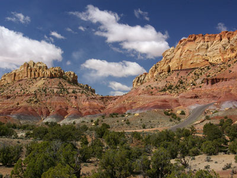
Jeff P from Berkeley, CA, USA, CC BY 2.0, via Wikimedia Commons; Image Size Adjusted
.jpg){kind=link}
Burr Trail Road
Remote scenic roadway traversing colorful badlands, sandstone cliffs, desert canyons, and rugged backcountry landscapes while showcasing some of southern Utah's most dramatic scenery.
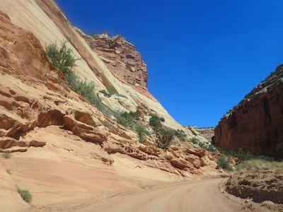
Jeff P from Berkeley, CA, USA, CC BY 2.0, via Wikimedia Commons; Image Size Adjusted
Capitol Gorge
From Capitol Reef National Park Visitor Center: Drive south on the Scenic Drive for roughly 8 miles until the pavement ends, then continue 2 miles on Capitol Gorge Road to the parking area at the road’s end.
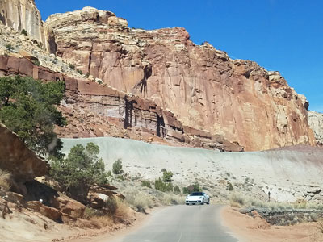
Jeff P from Berkeley, CA, USA, CC BY 2.0, via Wikimedia Commons; Image Size Adjusted
Capitol Reef Scenic Drive
A paved sightseeing road following multicolored cliffs and canyon walls with access to major trailheads and geology viewpoints.
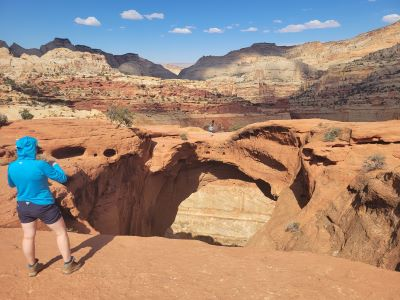
Jeff P from Berkeley, CA, USA, CC BY 2.0, via Wikimedia Commons; Image Size Adjusted
Cassidy Arch
A rugged desert trail featuring sweeping canyon vistas, dramatic sandstone formations, and a prominent natural arch viewed from both afar and above.
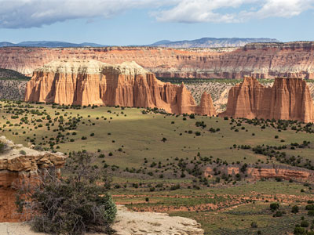
Jeff P from Berkeley, CA, USA, CC BY 2.0, via Wikimedia Commons; Image Size Adjusted
Cathedral Valley
Remote backcountry landscape featuring towering sandstone monoliths, colorful bentonite clay hills, rugged desert roads, dramatic overlooks, and expansive high-desert scenery.
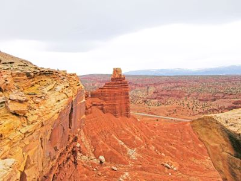
Jeff P from Berkeley, CA, USA, CC BY 2.0, via Wikimedia Commons; Image Size Adjusted
Chimney Rock Trail
A loop hike rising steeply to mesa‑top viewpoints overlooking sculpted sandstone formations and sweeping desert panoramas.
Difficulty: Moderate
A loop hike rising steeply to mesa‑top viewpoints overlooking sculpted sandstone formations and sweeping desert panoramas.
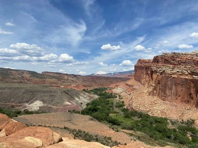
Jeff P from Berkeley, CA, USA, CC BY 2.0, via Wikimedia Commons; Image Size Adjusted
Cohab Canyon Trail
A canyon route featuring steep switchbacks, colorful rock formations, and expansive overlook vistas along a winding desert corridor.
Difficulty: Moderate
A canyon route featuring steep switchbacks, colorful rock formations, and expansive overlook vistas along a winding desert corridor.
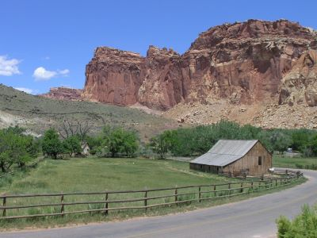
Jeff P from Berkeley, CA, USA, CC BY 2.0, via Wikimedia Commons; Image Size Adjusted
Fruita Historic District
From Capitol Reef National Park Visitor Center: Continue southeast on Highway 24 for less than a mile to reach the heart of the Fruita Historic District, including its orchards, historic buildings, campground, and picnic areas.
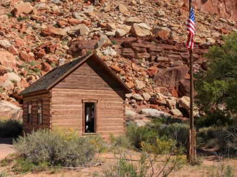
Jeff P from Berkeley, CA, USA, CC BY 2.0, via Wikimedia Commons; Image Size Adjusted
Fruita Schoolhouse
A historic one-room schoolhouse built in 1896, offering a glimpse into early pioneer education and community life in the region.
ALAN SCHMIERER, CC0, via Wikimedia Commons; Image Size Adjusted
.jpg){kind=link}
Fruita Schoolhouse
From Capitol Reef National Park Visitor Center: Continue southeast on Highway 24 for less than a mile to reach the heart of the Fruita Historic District, including its orchards, historic buildings, campground, and picnic areas.
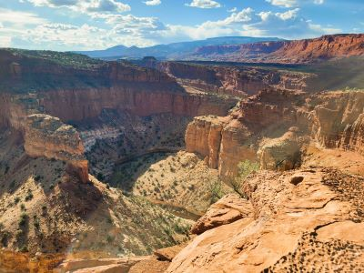
Jeff P from Berkeley, CA, USA, CC BY 2.0, via Wikimedia Commons; Image Size Adjusted
Goosenecks Overlook
A short rocky path leading to a dramatic canyon‑rim vantage point overlooking deep winding bends carved through layered desert sandstone.
Difficulty: Easy
A short walk to a viewpoint overlooking the dramatic meanders of the Fremont River, showcasing the park's unique geology and scenic beauty.
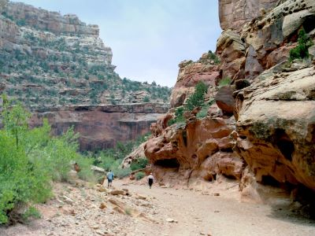
Jeff P from Berkeley, CA, USA, CC BY 2.0, via Wikimedia Commons; Image Size Adjusted
Grand Wash Trail
A mostly level canyon walk through towering Navajo sandstone walls and narrow passages shaped by seasonal desert floods.
Difficulty: Easy
A canyon route featuring steep switchbacks, colorful rock formations, and expansive overlook vistas along a winding desert corridor.
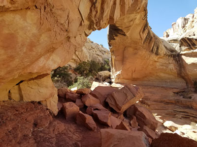
Jeff P from Berkeley, CA, USA, CC BY 2.0, via Wikimedia Commons; Image Size Adjusted
Hickman Bridge Trail
A short canyon hike leading to a massive natural sandstone arch framed by steep cliffs and desert geology.
Difficulty: Moderate
A canyon route featuring steep switchbacks, colorful rock formations, and expansive overlook vistas along a winding desert corridor.

Jeff P from Berkeley, CA, USA, CC BY 2.0, via Wikimedia Commons; Image Size Adjusted
Muley Twist Canyon
Remote backcountry canyon system featuring narrow sandstone passages, expansive slickrock benches, natural arches, towering cliffs, and sweeping views of a folded desert landscape.
Difficulty: Strenuous
A narrow, winding slot canyon with towering sandstone walls, unique rock formations, and a sense of adventure for those who explore its twists and turns.
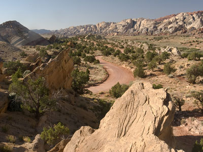
Jeff P from Berkeley, CA, USA, CC BY 2.0, via Wikimedia Commons; Image Size Adjusted
Notom Bullfrog Road
A long backcountry road following the eastern edge of the Waterpocket Fold across mixed pavement and graded dirt through remote desert terrain.

Jeff P from Berkeley, CA, USA, CC BY 2.0, via Wikimedia Commons; Image Size Adjusted
Oyler Mine
Historic uranium and radium mine site preserving remnants of early twentieth-century mineral exploration within a rugged desert canyon landscape shaped by colorful sandstone cliffs.
Difficulty: Easy
A historic mining site offering a glimpse into the area's industrial past, with remnants of old mining operations and unique geological features.
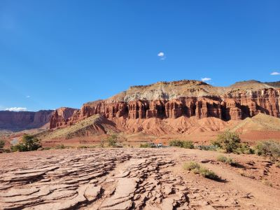
Jeff P from Berkeley, CA, USA, CC BY 2.0, via Wikimedia Commons; Image Size Adjusted
Panorama Point
From Capitol Reef National Park Visitor Center: Drive west on Highway 24 for approximately 2.5 miles, then turn right at the signed Panorama Point access road and continue to the parking area at the base of the viewpoint.
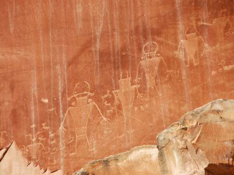
Jeff P from Berkeley, CA, USA, CC BY 2.0, via Wikimedia Commons; Image Size Adjusted
Petroglyph Pullout
From Capitol Reef National Park Visitor Center: Drive east on UT‑24 for about 1.5 miles to the well‑signed turnout on the right, park, and follow the short boardwalks to the viewing platforms along the cliff.
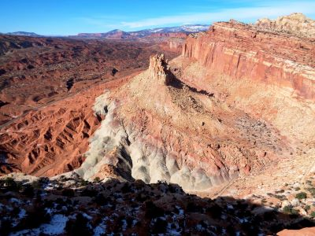
Jeff P from Berkeley, CA, USA, CC BY 2.0, via Wikimedia Commons; Image Size Adjusted
Rim Overlook and Navajo Knobs Trail
Long, steadily climbing desert route over slickrock and benches to sweeping cliff‑edge vistas and a 360‑degree summit panorama.
Difficulty: Rim Overlook: Strenuous (sustained climb); Navajo Knobs: Strenuous
Rugged trail ascending to a rim overlook with sweeping views of the park's unique geology, including towering cliffs, canyons, and distinctive rock formations.
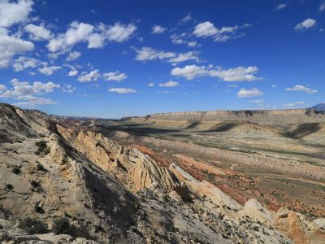
Jeff P from Berkeley, CA, USA, CC BY 2.0, via Wikimedia Commons; Image Size Adjusted
Strike Valley Overlook
Remote panoramic viewpoint overlooking a massive geologic fold, colorful desert valleys, rugged cliffs, and expansive layers of uplifted sandstone stretching across the horizon.
Difficulty: Moderate
A canyon route featuring steep switchbacks, colorful rock formations, and expansive overlook vistas along a winding desert corridor.
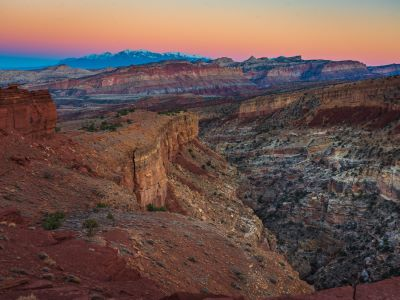
Jeff P from Berkeley, CA, USA, CC BY 2.0, via Wikimedia Commons; Image Size Adjusted
Sunset Point
A short, easy ridge‑top walk leading to wide panoramic views of colorful cliffs and the twisting canyon carved by Sulphur Creek.
Difficulty: Easy
A canyon route featuring steep switchbacks, colorful rock formations, and expansive overlook vistas along a winding desert corridor.
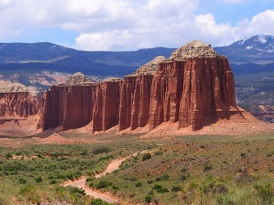
ALAN SCHMIERER, CC0, via Wikimedia Commons; Image Size Adjusted
Walls of Jericho
Remote canyon hike featuring towering limestone walls, waterfalls, caves, creek crossings, and a natural amphitheater carved by flowing water over thousands of years.
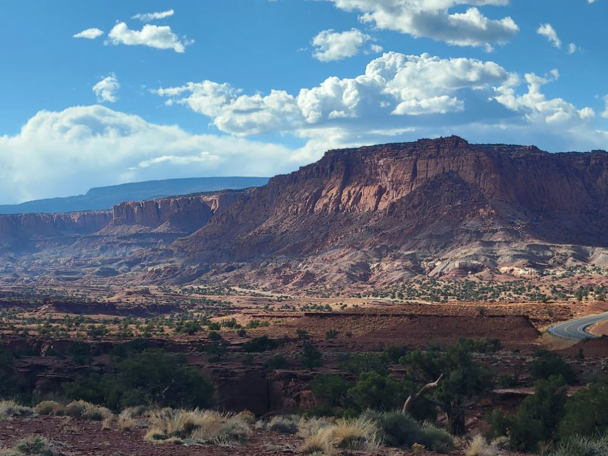

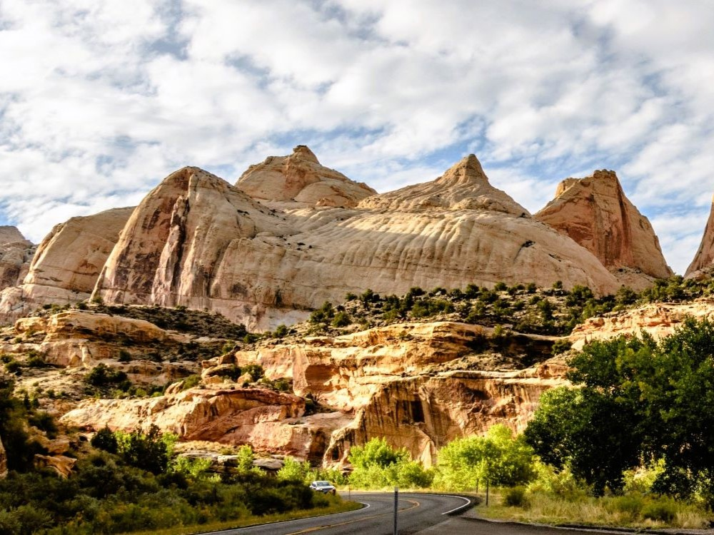
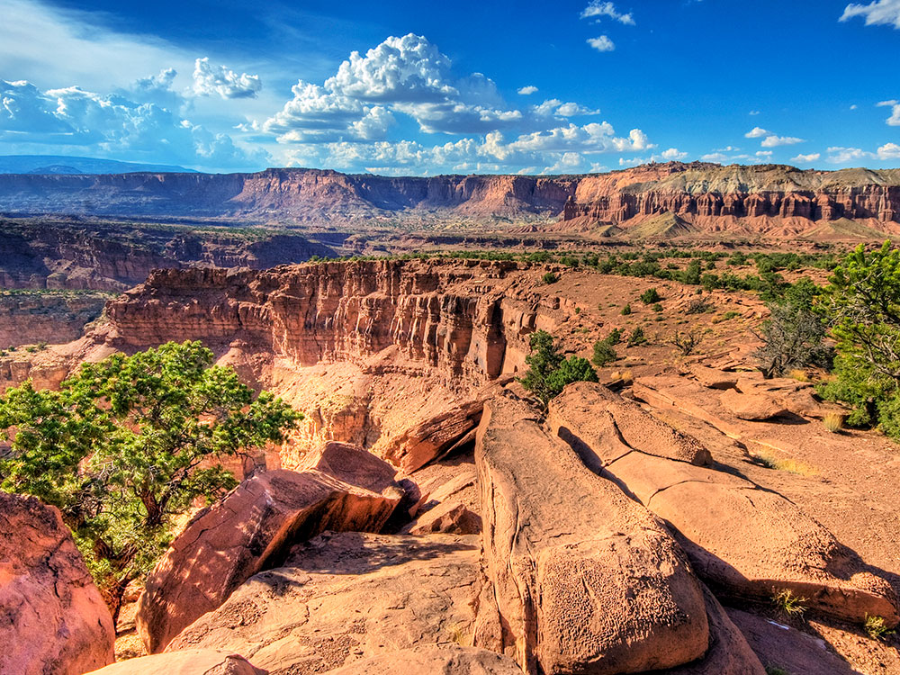

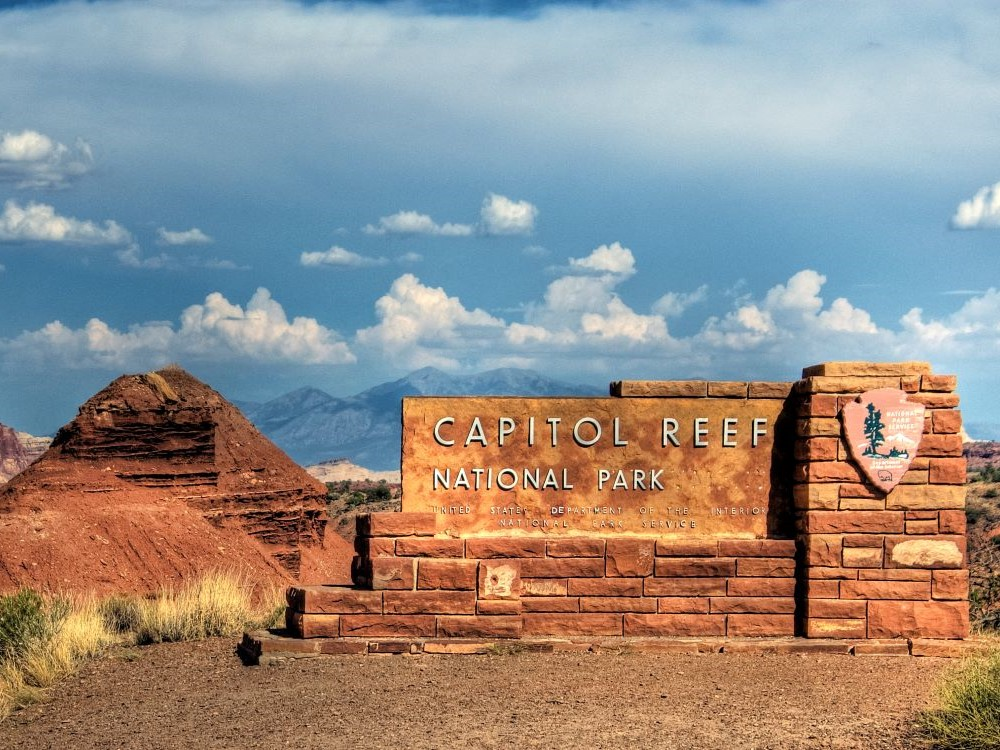

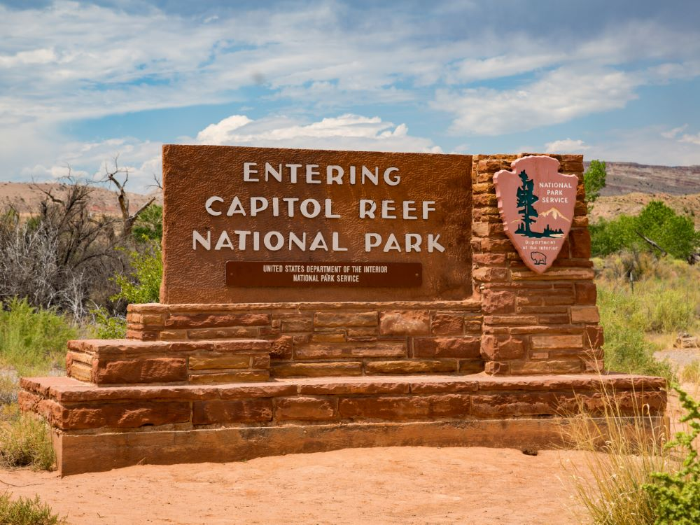

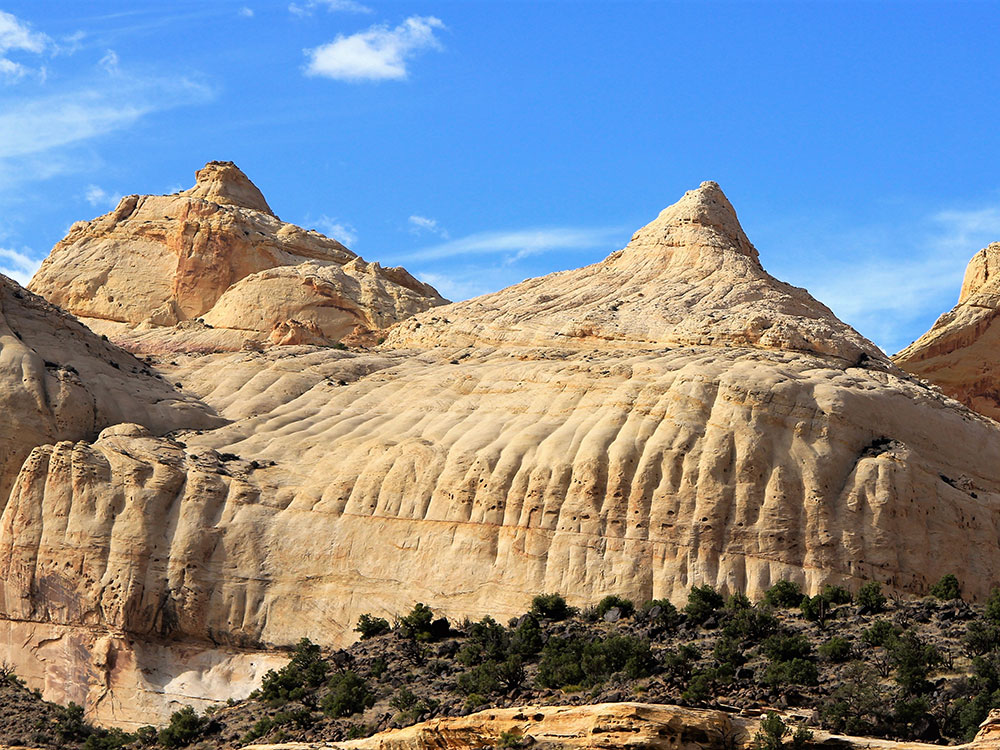
.JPG){kind=link}
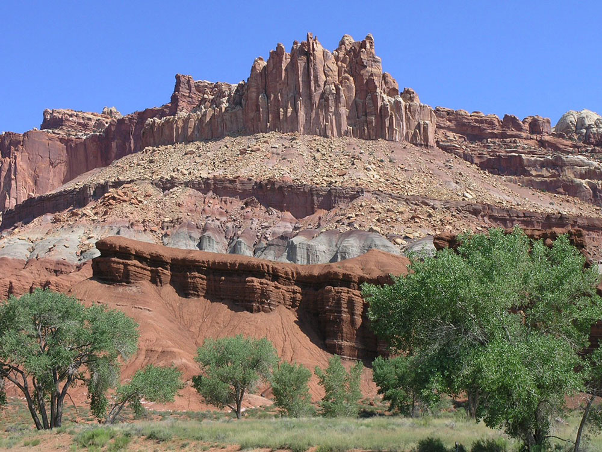